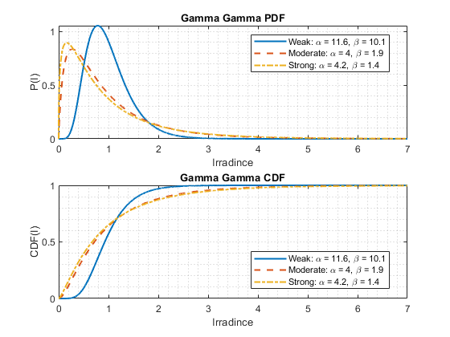

Contents
clc; clear; close all;
Constants
num_of_bits = 1e6 ;
height = 50 ;
p_dB = 0 : 1 : 30 ;
p = 10.^(p_dB ./ 10) * 1e-3 ;
distance = 500 : 250 : 2000 ;
distance = sqrt( distance.^2 + height^2 ) ;
lambda = 1.55e-6;
k = (2*pi) / lambda;
Initialization
data = (randi( 2 , [1 , num_of_bits] ) - 1);
transmitted_data = sqrt(p') .* data;
Attenuation Effect
alpha = 0.2;
ha = sqrt( exp(-alpha .* distance * 1e-3) );
Pointing Error Effect
w0 = 0.02;
a = 0.1;
sigma_s = 0.3;
Cn = [1e-16, 1e-13];
p0_weak = (0.55 * Cn(1) * (k^2) .* distance).^ (-3/5);
theta_0_weak = 1 + (2 * w0^2) ./ (p0_weak.^2);
wL_weak = w0 * sqrt( 1 + theta_0_weak .* (lambda .* distance ./ (pi .* w0^2)).^2 );
v_weak = sqrt(pi / 2) * (a ./ wL_weak);
A0_weak = abs(erf(v_weak)).^ 2;
wLeq_2_weak = (wL_weak.^2) .* sqrt(pi) .* erf(v_weak) ./ ( 2 .* v_weak .* exp(-(v_weak.^2)));
p0_strong = (0.55 * Cn(2) * (k^2) .* distance).^ (-3/5);
theta_0_strong = 1 + (2 * w0^2) ./ (p0_strong.^2);
wL_strong = w0 * sqrt( 1 + theta_0_strong .* (lambda .* distance ./ (pi .* w0^2)).^2 );
v_strong = sqrt(pi / 2) * (a ./ wL_strong);
A0_strong = abs(erf(v_strong)).^ 2;
wLeq_2_strong = (wL_strong.^2) .* sqrt(pi) .* erf(v_strong) ./ ( 2 .* v_strong .* exp(-(v_strong.^2)));
r = raylrnd(sigma_s, [1, num_of_bits]);
Turbulence Effect
step = 0.001;
x = eps : step : 7;
pdf1 = Gamma_Gamma(x, 11.6, 10.1);
pdf2 = Gamma_Gamma(x, 4, 1.9);
pdf3 = Gamma_Gamma(x, 4.2, 1.4);
figure();
subplot(2, 1, 1);
plot(x, pdf1, LineWidth=1.5);
hold on;
plot(x, pdf2, LineWidth=1.5, LineStyle="--");
hold on;
plot(x, pdf3, LineWidth=1.5, LineStyle="-.");
grid minor;
legend("Weak: \alpha = 11.6, \beta = 10.1",...
"Moderate: \alpha = 4, \beta = 1.9",...
"Strong: \alpha = 4.2, \beta = 1.4", Location="best")
title("Gamma Gamma PDF");
ylabel("P(I)");
xlabel("Irradince");
cdf1 = CDF_Gamma_Gamma(x, 11.6, 10.1);
cdf2 = CDF_Gamma_Gamma(x, 4, 1.9);
cdf3 = CDF_Gamma_Gamma(x, 4.2, 1.4);
subplot(2, 1, 2);
plot(x, cdf1, LineWidth=1.5);
hold on;
plot(x, cdf2, LineWidth=1.5, LineStyle="--");
hold on;
plot(x, cdf3, LineWidth=1.5, LineStyle="-.");
grid minor ;
legend("Weak: \alpha = 11.6, \beta = 10.1",...
"Moderate: \alpha = 4, \beta = 1.9",...
"Strong: \alpha = 4.2, \beta = 1.4", Location="best")
title("Gamma Gamma CDF");
ylabel("CDF(I)");
xlabel("Irradince");
ht_weak = GGrnd(num_of_bits, 11.6, 10.1);
ht_strong = GGrnd(num_of_bits, 4.2, 1.4);

AOA Effect
sigma_to = 5e-3;
sigma_ro = 5e-3;
theta_FOV = 16e-3;
theta_a = raylrnd(sqrt(sigma_to^2 + sigma_ro^2), [1, num_of_bits]);
hpa = ones(1,num_of_bits);
for ii = 1 : num_of_bits
if theta_a(ii) > theta_FOV
hpa(ii) = 0;
end
end
AWGN Effect
noise_var = 1e-14 ;
noise = sqrt(noise_var) .* randn(1, num_of_bits);
Main Simulation for Weak Turbulence
figure();
responsivity = 0.8 ;
for i = 1 : length(distance)
hp_weak = A0_weak(i) .* exp(-2 * (r.^2) ./ wLeq_2_weak(i));
received_data = transmitted_data .* ha(i) .* ht_weak .* hp_weak .* hpa + noise ;
electrical_signal = responsivity .* abs(received_data).^ 2 ;
detected_data = zeros(size(data));
for row = 1 : length(p)
threshold = sqrt(p(row)) / 2;
for col = 1 : num_of_bits
if electrical_signal(row, col) > threshold
detected_data(row, col) = 1;
else
detected_data(row, col) = 0;
end
end
end
error_count = sum(detected_data ~= data,2);
BER = error_count ./ num_of_bits;
plot(p_dB, BER, LineWidth=1.5, LineStyle="-");
hold on;
end
grid minor;
title("Bit Error Rate Evaluation for Weak Turbulence");
ylabel("BER");
xlabel("Transmission Power (dBm)");
legend("distance = " + num2str( round(distance(1),1)) + " m",...
"distance = " + num2str( round(distance(2),1)) + " m",...
"distance = " + num2str( round(distance(3),1)) + " m",...
"distance = " + num2str( round(distance(4),1)) + " m",...
"distance = " + num2str( round(distance(5),1)) + " m",...
"distance = " + num2str( round(distance(6),1)) + " m",...
"distance = " + num2str( round(distance(7),1)) + " m",...
Location="best");
annotation ( 'textarrow', [0.6 .9], [0.4 .9]);
figure();
BER = zeros(1, length(distance));
for j = 10 : 5 :length(p)
for k = 1 : length(distance)
hp_weak = A0_weak(k) .* exp(-2 * (r.^2) ./ wLeq_2_weak(k));
received_data = transmitted_data(j,:) .* ha(k) .* ht_weak .* hp_weak .* hpa + noise ;
electrical_signal = responsivity .* abs(received_data).^ 2 ;
detected_data = zeros(1, num_of_bits);
threshold = sqrt(p(j)) / 2;
for bit = 1 : num_of_bits
if electrical_signal(bit) > threshold
detected_data(bit) = 1;
else
detected_data(bit) = 0;
end
end
error_count = sum(detected_data ~= data);
BER(k) = error_count ./ num_of_bits;
end
plot(distance * 1e-3 , BER, LineWidth=1.5, LineStyle="-");
hold on;
end
grid minor;
title("Bit Error Rate Evaluation for Weak Turbulence");
ylabel("BER");
xlabel("distance (km)");
legend("Power = " + num2str( p_dB(11)) + " dBm",...
"Power = " + num2str( p_dB(16)) + " dBm",...
"Power = " + num2str( p_dB(21)) + " dBm",...
"Power = " + num2str( p_dB(26)) + " dBm",...
"Power = " + num2str( p_dB(31)) + " dBm",...
Location="best");


Main Simulation for Strong Turbulence
figure();
responsivity = 0.8 ;
for i = 1 : length(distance)
hp_strong = A0_strong(i) .* exp(-2 * (r.^2) ./ wLeq_2_strong(i));
received_data = transmitted_data .* ha(i) .* ht_strong .* hp_strong .* hpa + noise ;
electrical_signal = responsivity .* abs(received_data).^ 2 ;
detected_data = zeros(size(data));
for row = 1 : length(p)
threshold = sqrt(p(row)) / 2;
for col = 1 : num_of_bits
if electrical_signal(row, col) > threshold
detected_data(row, col) = 1;
else
detected_data(row, col) = 0;
end
end
end
error_count = sum(detected_data ~= data,2);
BER = error_count ./ num_of_bits;
plot(p_dB, BER, LineWidth=1.5, LineStyle="-");
hold on;
end
grid minor;
title("Bit Error Rate Evaluation for Strong Turbulence");
ylabel("BER");
xlabel("Transmission Power (dBm)");
legend("distance = " + num2str( round(distance(1),1)) + " m",...
"distance = " + num2str( round(distance(2),1)) + " m",...
"distance = " + num2str( round(distance(3),1)) + " m",...
"distance = " + num2str( round(distance(4),1)) + " m",...
"distance = " + num2str( round(distance(5),1)) + " m",...
"distance = " + num2str( round(distance(6),1)) + " m",...
"distance = " + num2str( round(distance(7),1)) + " m",...
Location="best");
annotation ( 'textarrow', [0.6 .75], [0.4 .9]);
figure();
BER = zeros(1, length(distance));
for j = 11 : 5 : length(p)
for k = 1 : length(distance)
hp_strong = A0_strong(k) .* exp(-2 * (r.^2) ./ wLeq_2_strong(k));
received_data = transmitted_data(j,:) .* ha(k) .* ht_strong .* hp_strong .* hpa + noise ;
electrical_signal = responsivity .* abs(received_data).^ 2 ;
detected_data = zeros(1, num_of_bits);
threshold = sqrt(p(j)) / 2;
for bit = 1 : num_of_bits
if electrical_signal(bit) > threshold
detected_data(bit) = 1;
else
detected_data(bit) = 0;
end
end
error_count = sum(detected_data ~= data);
BER(k) = error_count ./ num_of_bits;
end
plot(distance * 1e-3, BER, LineWidth=1.5, LineStyle="-");
hold on;
end
grid minor;
title("Bit Error Rate Evaluation for Strong Turbulence");
ylabel("BER");
xlabel("distance (km)");
legend("Power = " + num2str( p_dB(11)) + " dBm",...
"Power = " + num2str( p_dB(16)) + " dBm",...
"Power = " + num2str( p_dB(21)) + " dBm",...
"Power = " + num2str( p_dB(26)) + " dBm",...
"Power = " + num2str( p_dB(31)) + " dBm",...
Location="best");


Functions
function y = Gamma_Gamma(period, alpha, beta)
y = zeros(1, length(period));
for i = 1 : length(period)
y(i) = 2 * ((alpha*beta)^((alpha+beta)/2)) * period(i)^((alpha+beta)/2 - 1) ...
* besselk(alpha-beta, 2*sqrt(alpha*beta*period(i))) / (gamma(alpha) * gamma(beta)) ;
end
end
function y = CDF_Gamma_Gamma(period, alpha, beta)
pdf = Gamma_Gamma(period, alpha, beta);
y = zeros(1, length(period));
for i = 2 : length(period)
y(i) = trapz(period(1:i), pdf(1:i), 2);
end
end
function y = GGrnd(size, alpha, beta)
period = eps : 0.001 : 7;
cdf = CDF_Gamma_Gamma(period, alpha, beta);
rnd_num = rand(1, size);
y = zeros(1, size);
for i = 1 : size
y(i) = period( find(abs(cdf-rnd_num(i)) < 1e-2 , 1, "first" ) );
end
end